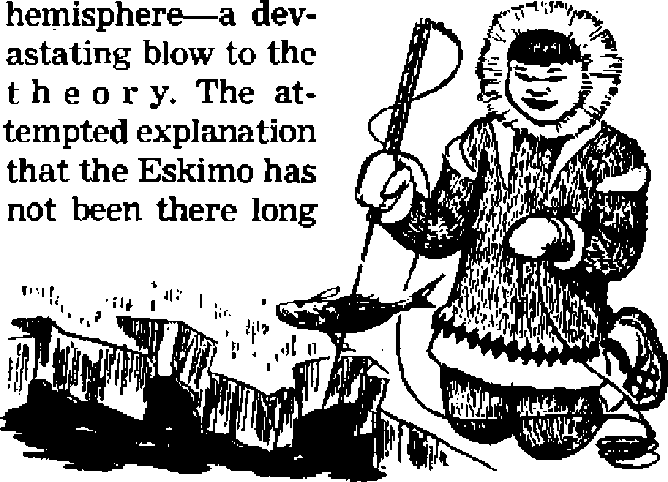

NOVEMBER 8, 1951 semimonthly
THE MISSION OF THIS JOURNAL
News sources that are able to keep you awake to the vital issues of our times must be unfettered by censorship and seltiah interests. “Awake I** has no fetters. It frecognizes facts, faces facts, is free to publish facts. It is not bound by political ambitions or obligations; it is unhampered by advertisers whose toes must not be trodden on; it is unprejudiced by traditional creeds. This journal' keeps itself free that it may speak freely to you. But It does not abuse its freedom. It maintains integrity to truth,
"Awake 1” uses the regular news channels, but Is not dependent on them. Its own correspondents are on all continents, in scores of nations. From the four corners of the earth their uncensored, on-the-scenes reports come to you through these columns. This journal's viewpoint is not narrow, but is International. It is read in many nations, In many languages, by persons of all ages. Through its pages many fields of knowledge pass in review—government, commerce, religion, history, geography, science, social conditions, natural wonders—why, its coverage is as broad as the earth and as high as the heavens.
“Awake r’ pledges itself to righteous principles, to exposing hidden foes and subtle dangers, to championing freedom for all, to comforting mourners and strengthening those disheartened by the failures of a delinquent world, reflecting sure hope for the establishment of a righteous New World.
Get acquainted with “Awake!” Keep awake by reading “AwakeI”
Peaushed Semimonthly By WATCHTOWER BIBLE AND TRACT SOCIETY, INC.
117 Adams Street
N, H, Knoha, President
Printing this latuei 075,000
Laafugii ia whl«b tbti magulat It patHlsheJ:
SMuinoatiily—Afrikaans, EukHjIl Flnnisb, Germiu, Norwegian, Spanish. Monthly—Danish, Frtneh, Qreek, Partugwsc, Swedish, Ukrainian,
Office Yearly sub?criptltHi Bate
AHtftea, U.S., 117 Adama St.. Brooklyn 1. N.Y. *1
Amiralis, 11 Bedford Rd., Strithfirld, Sa
ConaAi, 40 Irwin An., Toronto 9, Ontario ,1 England, 34 Craxen Terrace, London, W. 2 1i
Sorth Afrka, 623 Bostwi House, Cape Town Ta
Brooklyn 1, N, Y.f U, 9. A, Ghant Suites, Secretary
Five cents a copy
RtmlttMon should be seat to office in ywr country in camplfcncii with racuUtiiHis to guarantee safe dflllsery at money, RennlUencea era accepted at Brooklyn from cauntrica where no office is located. by international uttcey order only. Subscription rates in different countries are here stated in local currency. Notice tf tttplratloa (with renewal blank} is sent at least two issues before sitbatriptltm expires. CMnpt rt *44re« when sent to <mr office may be expected effective within one month, Bend your old as well aa new address,
Entered u second^lass matter at Bnwkiyn, N, Y.
Act of March 3, 1379. Printed In U. S. A.
CONTENTS
The International “Clean Worship” Assembly
Optimism and Practical Admonition
Reports from Many Lands
The Public Press
Bangkok’s Wild Week End
Armed Conflict
*1914—the Turning Point of Our Time’ The Clock That Ran on “Nothing” British Central Africa
—to Federate or Not to Federate
3
4
4
7
9
10
12
12
“Life, Liberty and the Pursuit
These Basic Desires Not Gained in 1776 22
Only Source of Life and Its Blessings 24 “Your Word Is Truth"
Christians Must Be Jehovah’s Witnesses 25
Water-Front Strife in New Zealand 27
Watching the World 29
& “Now it is high time to awake "—Romans 13:11t*
Volume XXXll
Brooklyn, 14. Y., November 8, 1951
Number £1
Jehovah’s Witnesses Meet in London August 1-5,1951
SUMMER, 1951, saw a spiritual festival in London, England, at the Empire Stadium, Wembley. In striking contrast to England’s much-advertised Festival on both sides of the Thames, which extolled the works of man, appealed to man’s love of pleasure and sought to extract as much money as possible from the people’s pockets, the spiritual festival at Wembley extolled the name and purposes of Jehovah God, appealed to man’s love of truth and righteousness and charged no admission, taking up not even a single collection.
For five days, from August 1 through 5, some twenty thousand Christian ministers from forty lands feasted on the very choicest of spiritual food at Wembley. The masterpieces of Scriptural argument and clear reasoning that they heard gave ample evidence that the spirit of God was richly upon the speakers, new flashes of light gave evidence that the path of the just was indeed shining ever brighter. (Proverbs 4:18) Indicative of the international character of the assembly was the provision for lectures in seven languages besides English.
Emphasis on Clean Worship
Hie assembly’s theme of clean worship was most timely. As noted in a series of articles recently appearing in this magazine, there is a breakdown of morals in every avenue of life, in socjety, in politics and even in religion. Fgr Jehovah’s ministers to be faithful to their commission it is not enough that they keep on preaching in spite of opposition. No, they must also witness to Jehovah by clean living. In a world so contaminated with hypocrisy, corruption and moral filth, what greater service could be rendered to God’s ministers than to highlight the imperative need that their worship be sincere, pure and undefiled?
So, repeatedly, the ministers were admonished regarding clean worship: “Prove by our lives that we belong to the new world.” “By engaging in evil works we deny Jehovah and show that we do not belong to him.” “As honorable vessels for Jehovah’s use Christian ministers must be shining, durable vessels, having a genuine ring and must be clean inside> not like the scribes and Pharisees.”
This theme of clean worship was especially emphasized in the talks given by the president of the Society, N. H. Knorr: ‘The world is in the mess it is because of wrong thinking. Bend the mind in the right direction. Right thinking is imperative for clean worship. To get the right bent of mind we must think God’s thoughts. What He thinks about he has put in his Word, the Bible, and that Word shows better what is in us than does worldly psychology. Today there is a battle between the gods over the issue of clean worship. Jehovah’s witnesses by keeping their worship clean are proving Jehovah true and the Devil a liar/
Optimism and Practical Admonition
Throughout the five days the notes of confidence and determination, joy and optimism were repeatedly struck by the speakers* “Come what changes may . . . our commission, our message, our determination remain unchanged.” ‘The stones will not have to cry out, because Jehovah’s witnesses will speak opt until the very end of this old system of things/ ’Nothing is impossible with Jehovah: He can shut the mouths of lions and open the mouths of asses!’
The talk “Confidently Facing the End” by the president overflowed with optimism: "Jehovah God is the biggest optimist in the universe, and his inspired Book, the Holy Bible, rings with optimism! His witnesses are the biggest optimists on earth in this last half of the twentieth century!” And why can they be termed optimists when they predict the speedy end of this old system of things? Because they “are looking for a new world to begin, with the most wonderful opportunities for living”.
And since true Christianity is a vital matter which reaches into every part of daily living, much practical counsel was also given. “Remember, it is never necessary to kill time. Do not imitate the world’s aimless, God-d e f y i n g ways. Work with a purpose and make sure your purpose coincides with God’s purpose.” “Never gamble with
opportunity by putting off until tomorrow preaching that can be done today.” Proper training of children, its importance and how to go about it were also featured t living examples being demonstrated to support the Scriptural arguments presented.
Outstanding were the president's closing remarks: “We have much tfork to do. Being one of Jehovah’s witnesses is not just saying you are one. It is being one of Jehovah’s witnesses. It is talking. The clergy have failed as preachers. So let us take on the whole load of responsibility to preach the Kingdom message now. If you claim to be a Christian and still conform to the ways of the world you are not a Christian. You are a hypocrite! Let us prepare ourselves now by getting God’s thoughts in our minds. Our mounting enthusiasm is not fanaticism but is based on understanding. It makes sense! Keep in pure, clean worship1.”
Reports from Many Lands
No small part of the optimism that filled the assembly was due to the glowing reports and interesting experiences from other lands. In Lebanon the people are so meek one finds a hearing ear at almost every door. There one fulltime minister rang the village church bell, thus calling together the whole populace. He explained that he had a very important message and did not have the time to call on all of them individually. They politely listened to his lecture and afterward contributed for literature. In the past two years the number of witnesses in Lebanoij has grown from 70 to 401.
Cyprus, the “ChittirrT of Bible times, has changed little since the days of the apostles. People are illiterate and easily influenced by the priests to form mobs. One mob broke up a public’meeting, smashing the chairs and making a fire with the books. Flaming books were hurled at the speaker. But in spite of all such opposition the work is going forward by leaps and bounds: 1925 saw only three witnesses, and 1946, 26, and June 1951 saw 311! Greece showed 3,441 ministers in 1950, and a 1951 peak of 4,163.
Reports from Darkest Africa were among the brightest. In the Gold Coast, t h e "White
Man’s Grave”, the change that the clean worship of Jehovah’s witnesses makes in the natives is apparent to all. In 1947, 50 of the Society’s magazines entered each month, now some 9,000 are entering monthly. The past year has seen an increase in ministers from 2,500 to 3,400. Women ministers in their preaching activity walk as many as 25 miles a day with a baby on their backs and a bundle of literature on their heads.
Next Nigeria was heard from. There the past year saw a 25 per cent increase, with a total of 10,300 ministers. South Africa reported that the -40 witnesses of 1925 have grown to 9,399 for 1951.
In primitive Southern Rhodesia, where 93 per cent of the natives are illiterate and where superstition, witchcraft, adultery and polygamy have to be contended with, Jehovah’s witnesses, because of being clean from all such, are greatly desired as laborers in the factories and on the farms. In 1946 there were 2,700, now there are 8,800 ministers of Jehovah there, and, of these, 850 devote a hundred hours or more each month to the ministry as pioneers. One out of every 250 of the population there is a witness for Jehovah!
Reports from the Scandinavian countries, Norway, Sweden and Denmark, also told of good increases and overflowed with optimism, as did also those of Iceland and Finland. In such lands oppqpi-tiontothework is mostly limited to tirades by the clergy from pulpit and in the press. In contrast to such is the opposition found in the Roman Catholic countries of Eire, Belgium and Spain. In Eire there are now more than 100 new ministers of Jehovah, sharing with the missionaries the burden of making known the good news of God’s kingdom.
Arrests are frequent in Belgium, an outpost of the Vatican, and recently a missionary was ordered deported. But still the work goes ahead very well, to the amazement of the Protestants and the consternation of the Catholics, the past year having seen an increase of 34 per cent. An encouraging report was given by the vicepresident of the Society, F. W. Franz, on the situation he found in Portugal and Spain. While it was impossible to rent halls for public meetings in Portuguese Azores, one hotel owner provided the hotel dining room for a lecture to the interested. In Spain all general assemblies and baptismal services had to be held in isolated places, reminding one of the early Christians in the time of pagan Rome. So far the secret police of Portugal have not interfered with the house-to-house activity of Jehovah*s witnesses, but in Spain the witnesses must proceed with the utmost caution. But, ban or no ban, good increase is apparent on the Iberian peninsula.
The report from Roman Catholic Italy was a surprise to most. The common people there refer to the “Church” as La Boteca} “The Shop,” and they refuse to be aroused to violent opposition against the ministers of Jehovah. While local officials bow to pressure of the Church in discriminating against the work of the witnesses, a far-reaching victory was recently won in the supreme court of Italy. The past five years have seen an average increase of 75 per cent each year, from 100 ministers in 1946 to 1,739 in 1951. Luxembourg and Switzerland reported good increases.
The Canadian report was brimful of enthusiasm. Duplessis, archfoe of freedom of worship, has had to swallow one bitter defeat after another and seems to be definitely on the way out. In just a few years the number of Jehovah’s ministers in very Catholic Quebec has increased fourfold in spite of his opposition. In Canada there is now one minister for each 700 of the population. The report from Germany breathed confidence and determination. Western Germany was certain of making its goal of 34 per cent increase in witnesses in one year. Though the blow struck last summer by the Reds against the witness work in Eastern Germany, in which the headquarters office was occupied and 800 leading brothers were arrested, caused the work to temporarily stagger, it is staging a magnificent comeback, so that a year later finds as many ministers in the field as before, in spite of all the arrests and brutal treatment. One minister in prison heard cries of pain and groans all night long, emanating from the cell next to his.r The next day he learned that the Reds had used a phonograph record to try to frighten him into denying his faith! In spite of the Iron Curtain Jehovah’s ministers in the Eastern zone regularly receive spiritual food from the table of Jehovah.
The report from the United States told of increased opposition due to Truinanism slowing down the wheels of justice. Nevertheless, the work here also is going confidently forward. The number of ministers in this land has doubled since 1946, and it has been necessary to double its headquarters staff and printing facilities. Truly, as the assembled ministers of Jehovah at Wembley heard these reports they felt like the prophet of old foretold they would feel: “Then thou shalt see and be radiant, and thy heart shall thrill and be enlarged.” —Isaiah 60:1-5, Am. Stan. Ver,
The Public Lecture and Releases
The high point of the assembly was the public address “Will Religion Meet the World Crisis?” delivered Sunday afternoon by the president of the Society. “World religion, particularly the religion of so-called Christendom, has always cast itself in the role of savior of mankind. Now is the time for it to carry out its assumed role. Never was the opportunity for showing what kind of force it can be in the world greater than now. For now this world is faced with its worst crisis, and, if it is worth saving, it certainly needs saving now.” After those opening words the speaker showed that the pagan religions have no message for our day; that particularly since the time of Constantine has apostate Christianity grown, the wedding between church and state taking place A.D. 800 with Charlemagne, and the apostate adulterous situation still goes on.
The real crisis facing the world is not atomic warfare or the communist peril, but the same kind that faced the world in Noah’s day: destruction of its system of things at the hand of Almighty God. The League of Nations failed, and neither is the United Nations God’s answer to the prayer “Your kingdom come”. “God will not lower himself to man’s level and dicker with diplomats and deputies over a conference table for political advantages and concessions?’ In his closing remarks Mr, Knorr counseled his listeners to put their trust in the kingdom of God. “Prove yourself a sheep by doing good to Christ’s spiritual brothers. Make yourselves their companions of good will and join with them in proclaiming the good news to others who are in darkness and peril for their lives. By doing so you will help to eternal salvation both yourselves and those who listen to you. In this way you will successfully meet the world crisis?’ Free copies of the lecture were offered to the 36,315 that heard the discourse under a cloudy sky.
During the assembly other publications were also released or introduced for the first time. On Thursday afternoon the president of the Society displayed a set of four tracts succinctly dealing with the issues raised by the ministry of Jehovah’s witnesses: What Do Jehovah’s TVifnesses Believe? Hell-Fire—Bible Truth or Pagan Scare? Jehovah’s Witnesses, Communists or Christians? and Awake from Sleep!
And on Saturday afternoon, the bound book What Has Religion Done for Mankind? was released by the president. In answer to its own question the book follows the course of religion from Eden down to our day and into the future, as revealed by Bible prophecy. Discussed are not only Christendom’s religion but also the great religious divisions of Hinduism, Buddhism, Confucianism and Mohammedanism. Red Communism is shown to be just another false religion posing as a savior of mankind, and, like the rest, doing serious harm; all of which will meet their doom at Armageddon. On the brighter side, the book traces and describes true religion and shows what it will accomplish for mankind in the new world just at hand. By all odds, the most penetrating and understandable book ever written on the subject of religion, true and false.
The Public Press
For the most part the newspapers of London paid scant heed to the international convention of Jehovah’s witnesses at Wembley. Notable exception was the Socialist or Labor paper, The Daily Herald, which carried a daily report, and the local Wembley papers. Also the Reynolds, which serves as a sort of Sunday edition for the Herald, and the Manchester Guardian.
Reporting on the baptism, at which 1,123 were immersed, the Herald published a good picture and story entitled “Galilee Comes to the Lido”, from which we quote the following:
“A middle-aged woman gazed over the still water of Ruislip Lido, Middlesex, yesterday, with a rapt look in her eyes. And she said: ‘It’s like standing on the shores of Galilee? Shortly afterwards I was chatting with a young American and he said: 'This is reminiscent of the days of John the Baptist and the river Jordan? Those remarks give a clue to the almost frightening earnestness of Jehovah’s witnesses who were at the Lido for a mass baptism. It was a grand setting. Sunlight, water, a cool breeze. A rather fat man in bathing trunks waded in and stood at the middle depth, smiling and waving invitingly. . . . At once scores of men waded towards him. ... Then came the women.,,. Some women were old, many middle-aged and many young. And some of the swim-suits were as attractive as their wearers. But don’t doubt the sincerity of these people, disagree with them as you may. One crippled man with a walking stick was helped down and immersed. . , A Witness explained the symbolism of. immersion like this: When the Immerser takes hold the person self-surrenders. Then, when you are pushed backward into the water, that is a symbol of death to the old selfish will. When the Immerser pulls you up (it takes only a couple of seconds) that is a symbol that you ‘are alive again to serve the will of Jehovah God.’ ”
Telling of the fact that for two evenings the convention had to make way for scheduled races at the stadium, the Herald reported:
“Religion Halts for the Speedway
“Jehovah’s Witnesses were taking down the banners, the signs and the slogans at Wembley Stadium yesterday afternoon. Everything was cleared away for the evening speedway racing. But the signs and slogans were to be back soon after sunrise today. The Witnesses can organize. There is no doubt about that. They promised to have everything spick-and-span and ready for speedway. They are pledged to have everything just as neat and tidy for the greyhound racing tomorrow night. The banner ‘Clean Worship Assembly* will come down from the front of the Tote. The bookies on the ‘cheap side1 will not be distracted by the flaming red streamer which says ‘Praise Jah, you people, because Jehovah our God, the Almighty, has begun to rule as King/
“Highly Skilled
“But Sunday everything will be back again in readiness for the finale, when Mr. N. H. Knorr, president of the Watch Tower Bible and Tract Society, New York city, will do what is called the ‘climaxing* with an address on ‘Will Religion Meet the World Crisis?’ Many discourses were delivered yesterday but all the time one had the feeling that behind them was a concentrated and efficient organization using the highly skilled labor of the Witnesses.
They gave their work for the glory of their cause as they see it—carpenters, electricians, microphone experts, plumbers, and so on. There is an international men-and-women orchestra of about 100. Some of them can’t talk to each other because of the language trouble. But they play well/'
The Herald gave, representative quotes from the public talk, such as: “The clergy . . . have forsaken God’s Word for human traditions, philosophies and modem science. They depend on bullets more than on Bibles, on bombing missions more than on Gospel-preaching missions/’
The Communist paper, the Daily Worker, ran true to form in its report on the assembly. According to it the assembly was “the strangest gathering the Wembley Sports Stadium [had] ever seen**. It sought to arouse nationalistic bias by stating “everything about the Convention is so unlike the normal British religious gathering that it is easy to imagine the place is the great Yankee and not the Wembley Stadium”. And it also professed great Concern over where the money came from.
No question about it, the international Clean Worship Assembly of Jehovah’s Witnesses at Wembley, London, resulted in giving an effective witness to the world’s largest city. The people heard and saw the thousands of witnesses and they read about them. And as to the result? The name of Jehovah was extolled, Jehovah’s servants were strengthened and drawn closer together; men of good will heard and believed, and others mocked.
The international assembly at Wembley was followed by a series of national conventions held on succeeding week ends at Paris, Rotterdam, Frankfort, Copenhagen, Vaasa and Helsinki, Stockholm, Lillehammer (Norway), and Vienna^ culminating with the one at Washington, D. C., October 12-14, 1951.
An eyewitness account of Thailand’s latest abortive coup d’etat, by “Awake!" correspondent located there
i^rpHE adventures of the prime minis-
I ter last week end read like something out of a Hollywood super-serial.” So commented one of Bangkok’s newspapers as it related the story of the recent coup d’etat staged against the government of Field Marshal Pibul Songgram, premier of Thailand (Siam), during which the premier was kidnaped, held captive by enemy forces, narrowly escaped death, and then returned unharmed and victorious to the headship of his government again.
It all began at the Royal Landing on the east bank of the Chao Phya river, in north Bangkok, just a stone’s throw from the walls of the king’s palace. The day, Friday, June 29, 1951. The time, about 3:30 in the afternoon. Thousands of people had assembled to view the ceremony attending the presentation of the dredging-ship “Manhattan” as a gift to Thailand from the United States, under the ECA program, to improve Bangkok’s harbor facilities. The foreign diplomats and their wives were all present, as well as many high-ranking officials of the Thai government and armed forces.
The ceremony itself, consisting of speeches by the U. S. chargd d’affaires and the premier and prayers of blessings and anointing of the ship with holy water by yellow-robed Buddhist priests, had now been concluded. The premier, accompanied by members of the diplomatic corps and prominent Thai and foreign guests, unsuspectingly boarded the “Manhattan” for a tour of inspection. Within a few minutes a lieutenant commander of the Royal Navy had whipped out a pistol, shouting, “Seize the field marshal!” At the same time he fired a warning shot into the air.
Immediately men in his command disarmed the premier’s two aides, while naval police on duty drove back the public who were watching the ceremony. Then, at gun point, the premier and his two aides were forced into a waiting boat and whisked away to the Royal Navy’s gunboat H.M.S. “Sri Ayuthia”, anchored midstream in the fiver. All of this in full view of crowds of spectators who, sensing the danger of the situation, hurried for home.
Within an hour soldiers and police, bristling with rifles and machine guns, were on the move. Tanks, armored cars and bazookas took up positions on the streets and all strategic points were barricaded.
Meanwhile, naval forces had seized the government-controlled power station and the entire city was without electricity. Radios could not play, and for this reason news of the premier's capture was slow in traveling among the people, many of whom hours afterward still did not know what was going on. With the resumption of electric power shortly after 8 p.m., the navy’s radio station, controlled by the insurgents, and four government-controlled stations came on the air to begin a war-of-words that was to continue throu^iout the remainder of the night
The navy's station claimed that they had overthrown the government of Pibul Songgram and had formed a new government for the betterment of the nation. The navy gave notice that many top men in the government had been relieved of their position, and named other men to take their place. The navy’s station also broadcast at intervals a recording of the premier’s voice, which he had been forced to make following his abduction, calling for the people to remain calm and urging the armed forces not to fight
The four government radio stations, on the other hand, announced that the Pibul government had not been overthrown but was still strongly in power despite the absence of the premier and that the rebel navy forces were acting against the interests of the nation. The leaders of the three remaining armed forces (army, police and air corps) personally spoke over the air, warning the naval insurgents to cease their unlawful action and return the premier, Finally, the government officials issued an ultimatum that if, before midnight, the navy did not agree to return the premier and meet for peaceful settlement the Royal Air Force would bomb the naval headquarters and other installations of the Royal Navy.
On the navy’s station, "Anchors Aweigh” and popular dance music, interspersed with an occasional announcement, was the only answer to the government's threat to bomb. The excited people of Bangkok, huddled beside radios, became tense as the hands of the clock raced quickly toward midnight. However, a few minutes past midnight a naval spokesman in an excited voice announced an agreement to meet shortly with government representatives at a neutral location. With this hope for peaceful settlement, most of the people de
cided to retire and get some much-needed sleep.
Armed Conflict
Their rest, however, was a short one indeed, for after only several hours the "boom" of the navy's large ship guns on the river woke them from their sleep to announce that peace talks had failed All civilians living near the naval headquarters and other naval strongholds were urged by the government radio stations to evacuate at once. Air flights scheduled to arrive at Bangkok's large Don Muang airport were diverted away from the city and all rail and othef travel ceased. Martial law was declared and all citizens were forbidden to enter or leave the city.
With the coming of light the fighting increased in intensity. On the land street battles were being fought, with the naval forces on one side and the police and army on the other. This was a strange and surprising sight to many of the foreign residents, who had previously witnessed army and navy fight it out on the football field, but never before on the battlefield. Tanks, machine guns and other equipment were thrown into the fight by both sides, and shells and bullets were flying everywhere. In the air, fighter planes of the Royal Air Force began bombing and machine-gunning the naval headquarters on the west bank of the river and the Navy Signal Corps headquarters on the east bank. One incendiary bomb scored a direct hit on a navy fuel depot on the west bank, sending a pall of black smoke over the city.
Meanwhile, the H.M.S. "Sri Ayuthia", with the premier and his captors still on board, prevented from reaching open sea by a closed drawbridge over the river, steamed up and down the river taking pot shots at nearby troop concentrations. Threat was also made to shell the airport. Soon Air Force planes were swooping down over the “Sri Ayuthia”, dropping bombs and strafing with their machine guns. Fires broke out in different parts of the. ship and many of the crew were killed and others wounded. The army, too, had been firing at the ship from the east bank and had scored several direct hits, and the ship was beginning to take in water.
With the tide of battle turning, the chief officers announced that they had some business to attend to on shore and left the ship. Sensing that they had been deserted by their officers, the junior officers and crew soon gave up the fight and began abandoning the ship. Several of the men helped the premier, clad now only in undershorts, to find a life belt, and together they jumped over the side into the river. Although the premier had been without food for nearly twenty-four hours, he succeeded in swimming to the west bank of the river, where he took refuge in the water until nearly dark. He was then led to naval headquarters, a short distance away, and there he was provided with dry clothing and arrangements were made for his return to government headquarters. By midnight the premier was safely back at his post, with certain victory over the rebels in sight.
Early Sunday morning the last stronghold of resistance capitulated with the capture of the Navy Signal Corps headquarters in south Bangkok. By noon road blocks and barricades had been removed and the streets were filled with people hurrying here and there surveying the damage. Thousands crowded onto the Memorial bridge, a drawbridge spanning the river, to watch the deserted and burning gunboat H.M.S. “Sri Ayu this”, once the pride of the Royal Navy.
Thus came to an end Thailand’s most bloody and destructive insurrection. Since its first coup d’etat on June 24, 1932, after which Thailand (then Siam) changed its form of government to become a constitutional monarchy, there have been numerous coups, both successful and unsuccessful. However, never before had such large-scale fighting been carried on resulting in such great destruction, loss of life and suffering as in the recent coup d’etat of June 29 to July 1,1951. During that week end more than a thousand people were either killed or wounded, more than half of whom were civilians, both native and foreign residents. Property damage mounted into the millions. At the beginning of the disorder some thought that it was communist inspired. Whereas this may perhaps be true to an extent, the facts seem to show it was simply a local political quarrel.
Now the sound of diving fighter planes and artillery fire has stopped and Bangkok has settled back to normal, peaceful life once more. But what the near future holds no man knows. As long as imperfect men, regardless of political party, hold the reins of earth's governments there will continue to be rivalry and discontent, and the common people will suffer as a result. There is, however, sure hope that relief will soon come, for a perfect government, from a higher source than men on earth, is now at hand. This government that will satisfy all good men is the righteous kingdom of heaven that has been established since A.D. 1914 in the hands of God’s Son and King, Christ Jesus.
Sacred prophecy tells of His rule of equity and justice, saying, “He shall save the children of the needy, and shall break in pieces the oppressor. In his-days shall the righteous flourish; and abundance of peace so long as the moon endureth.” (Psalm 72:4, 7) In this kingdom of Jehovah God, by Christ Jesus His King, lies the one true and unfailing hope for the good people of Thailand, and those of honest heart in all the world.
THERE has come Into existence, by this midpoint in our century, a substantial and rapidly expanding literature concerning itself, at various levels and from different angles, with the general question of the significance of scientific development and the impact of this development upon our time, our society, and its fate.
Tg This phenomenon is simply a reflection of the obviously large, and ever-growing larger, role that science has been playing in all aspects of our activities. The sensational impulse given by political and social discord to the perfection of instruments of destruction —by-products of, but closely related to, some of the more abstruse developments in theoretical physics—has brought the ordinary citizen to an acute and immediate awareness of the possible consequences for him of what goes on in the quiet of a laboratory. Even physical scientists have in some cases been jarred into an unwonted feeling of social consciousness and responsibility. But for all the
awesome possibilities of modem explosives —those so far tested and their improved versions in course of realization—the atomic bomb was but an incidental manifestation of a process which has been under way for a considerable span of time.
'j* Dangerous as it is merely to extrapolate from the past, It is nevertheless useful to recall that many before 1914 drew confidence from the very effectiveness of the then-existing engines of destruction: civilized man would not go to the length of wrecking his society and his culture. The argument is still heard, though its echoes carry ever-feebler conviction. It is indeed the year 1914 rather than that of Hiroshima which marks the turning point in our time, for by now we can see that, whatever the future may hold in store, it was the first world war that ushered in the era of confused transition in the midst of which we are floundering.—Quoted from an article in The Scientific Monthly, July, 1951, by Rene Albrecht-Carrie, associate professor of history at Columbia University’s Barnard College.
Th£ Clock That Ran on “Notking”
<£ In its issue of June 25, 1951, Life magazine ran a large picture of a homespun South American inventor named Sangutno Alves da Silva holding a clock that had stood Rio de Janeiro on its intellectual ears. The unusual timekeeper consisted of a large transparent face and two large hands to indicate the time. That was all—apparently all, that is. No works for motivating the clock to tell the correct time were to be seen. Life declared the inventor was holding out his secret for his own fixed price: $110,000. Beneath the picture Life added that “experts believe that the secret may lie in the hollow hands”.
<1 Next installment in the mystery came suddenly. Americans proved apparently more clockwise than da Silva’s own neighbors. Into Life’s offices poured messages from 195 readers, including sixty-five sketches or diagrams. Secret was revealed in numerous clocks on display for years in different parts of this country. A similar clock was reported by one correspondent to have been patented in Paris on September 1, 1874. The explanations suggested that tiny watch works were mounted in the wrong end of each of the hollow hands. Said William H. Samuels, director, Elgin Watchmakers College: “Rotation weight driven by movement causes hand to change its equilibrium. Thus each hand will move at desired pace.”
By “Awaktl" corr«i pendant In Nytnaiand
Territorial changes taking place in many parts of the world are keeping map makers busy making adjustments. Soon an addition may have to be made to the maps of Africa by the insertion of the words “British Central Africa” across nearly half a million square miles of land now known as Southern Rhodesia, Northern Rhodesia and Nyasaland.
For many years the idea of uniting the three territories into a closer relationship has been discussed and various proposals submitted, debated and cried down by op-posers. In February, 1949, an important conference was held at Victoria Falls, Southern Rhodesia, between delegates of Northern and Southern Rhodesia and Nyasaland. But much talk ensued without reaching a final conclusion.
Opposers of any union hoped that the interval of two years meant that the schemes had fallen through. But riot so; the subject is back again before the public eye in more prominence than ever as a result of the action of the British government in calling a conference to discuss closer co-operation between the three territories. After a session of four weeks this conference approved a federation to be called "British Central Africa”.
British Central Africa
—to Federate or
Not to Federate?
Too many cooks?
Southern and Northern Rhodesia and Nyasaland have many things in common, but it would be equally true to say that they have many differences in background and outlook. Southern Rhodesia is a self-governing colony whereas Northern Rhodesia and Nyasaland are Protectorates under the British government acting through the secretary of state for the colonies, in London. The three territories are in different stages of political and economic development. But these are not the big obstacles in the way of closer association. No, it is the difference in outlook displayed by the three governments toward the majority, the native Africans, that splits opinion so sharply.
Southern Rhodesia, with its relatively high white population, has erected a color bar which, although not as extreme as in South Africa, places the native Africans in a much inferior position, denying- them land rights or opportunity to live within towns except for certain native locations, giving them little or no opportunity to advance in a trade or in clerical work.
Northern Rhodesia and Nyasaland have a much smaller proportion of white settlers, only .4,000 in Nyasaland, to compare with million natives. Here natives may be employed in any work up to the capacity of their limited education, and government offices use a large number In work carrying varying degrees of responsibility. Considerable freedom is granted and in the villages the headmen and chiefs handle affairs with the minimum interference of the white administrative officers.
Federation Recommended
Knowing this fundamental difference in handling of native affairs, the conference rejected the suggestion of complete amalgamation between the three territories into a single state, on the grounds that the idea is unacceptable to a large percentage of the people. A further suggestion of some form of "League” was dismissed as being too weak to accomplish closer association. Instead, the conference agreed that what is wanted is some means of amalgamation that would have the desired advantages of greater economic security and political strength and better development of the resources of the territories, but at the same time having the minimum of interference with the present administration of native affairs and associated touchy problems.
Under federation each territory would be responsible for handling its own native affairs and would have its territorial government as at present. Other features of government most closely affecting the Africans, such as agriculture, marketing, labor, local government, police and public works, would also come under the territorial government. The federal government would be responsible for external affairs, defense, immigration, customs, railways, civil aviation, posts and telecommunications, higher education and external trade. This federal government would consist of a legislature of 35 members, 17 from Southern Rhodesia, 11 from Northern Rhodesia and 7 from Nyasaland. It would have a prime minister and a cabinet of 5, at least one member being from each territory. Nine of the 35 members would be chosen specially to represent African interests and four of them would be natives.
In an attempt to woo the Africans to federation, big provisions have been recommended for the safeguarding of their interests. Besides the federal government’s being kept away from native affairs as far as possible, an African affairs board is proposed to watch over and to discuss all legislation, to see that it does not encroach on native interests. If this board considers that a bill would so encroach, it would have a voice in the cabinet through its chairman, who would have ministerial rank, and its objections could be raised. Should the cabinet turn a deaf ear to the board’s objections, appeal could be made through the governor general to the secretary of state for the colonies in London, the bill being held up pending his intervention or decision.
On the face of it the report and its recommendations seem fair and reasonable. The majority of the white population, with an eye to the economic advantages, support federation. Why, then, are there difficulties? Why are the African congresses of Nyasaland and Northern Rhodesia opposing federation so strongly that a move was made at one meeting in Northern Rhodesia to have the conference’s report publicly burned? Take Nyasaland aw an example.
Objections of Natives
In 1891 the native population through its chiefs voluntarily put itself under the protection of the British government and an agreement was made. It has always been understood that this protection is to last until such time as the native Africans are sufficiently developed to take over the government into their own hands. By far the majority of Africans agree that this time is still well in the future, but they look for self-government in due time. This has been strengthened by the attitude of the British government in granting selfgovernment to another native country > the Gold Coast, and by statements made at different times by its representatives. With these thoughts in mind the natives ask, “What reason is there to change to federation? We are happy as we are.” In federation the natives see everything to lose and nothing to gain. If they are linked with Southern Rhodesia by a federation (and Southern Rhodesia would play the predominant role in that arrangement), what hopes can there ever be for a native selfgovernment? Self-government for whites under Dominion status could come, but self-government for natives, never. That is how the African looks at it.
Furthermore, “What legal and moral right has the British government to change the present arrangements of a protectorate?” ask the native population. “This arrangement is what our fathers agreed to in 1891 and we agree to it. We are quite satisfied without any changes/’ A few hotheads cry for self-government now and others suggest looking to a foreign government for protection if Britain lets them down, but most keep levelheaded and repeat the simple desire to keep on with the existing arrangements of a protectorate. Underneath is a deadly fear of the Southern Rhodesia color policy being extended to Northern Rhodesia and Nyasaland, and perhaps the dreaded apartheid policy of South Africa being adopted in all three countries, and these fears are not lessened by the safeguards named in the report.
Educated Africans examine the report of the conference and point out flaws in these safeguards. Take, for example, the African affairs board. In theory this appears to be a watertight provision; but is it? Suppose that this board persistently disagreed with the federal government, as could easily happen. Frequent appeals would be made to the British government, which would have to be upheld or rejected. If they were upheld regularly this would irk the federal government considerably and strong efforts would be made to change the arrangements, probably by insistence on Dominion status and complete control of everything in the hands of the federal government. This would end the safeguards for native Africans. But would the British government always support the African affairs board? Other British colonies with considerable power to handle their own affairs nominally have to submit all legislation to London for approval, but that approval is automatic and in practice the British government does not interfere. Could it not be the same with British Central Africa?
Then again, if the prime minister of the federal government found that the African affairs board was giving trouble he could dissolve parliament. This would dissolve the board automatically, because its chairman and at least three members would be on the board by virtue of being in parliament. A new parliament would mean a new chairman and maybe new members of the board more amenable to the federal government and not so strongly championing African interests.
* And so argument goes back and forth. No one imagines that federation or any other alternative will have the unanimous support of all the people. Too many divisions are too deeply cut to have unity under any human solution. That is why Christians in these territories whether white or native Africans are not supporting or opposing federation. A government capable of uniting not only these three territories but all other countries as well into one harmonious whole is a Christian’s desire. Such a Government is a reality, the kingdom of Jehovah God through Christ Jesus.
LIKE a beautiful, living color wheel the varied races of mankind blend into view around the world. Physical differences stand out in bold relief: noses, flat and pointed; hair, straight black and wavy brown; skin colors, white, yellow, red, brown and black. In our article entitled "All Kinds of Men” (See October 22 Awake!) the explanation according to genetics was given for such variations. Thus do the invisible carriers of heredity called genes travel from parents to offspring, where they dictate the make-up of the new individual physically and mentally. Certainly life’s complexity assures it did not begin haphazardly in some mud puddle or lagoon.
Regardless of their specific beliefs, geneticists usually agree on the point of all mankind springing from a common origin. Also, since physical appearances are only the result of gene action, a modem concept is to divide races by genetic constitution alone. In this way the races were boiled down to six by William Boyd, in his book Genetics and the Races of Man, referred to in our previous article mentioned above.
A quick glance at common surface appearances shows how difficult conclusive divisions by their measure would be. There is the ratio of the width of the skull and the nose to their respective lengths. In the case of Negroid noses, for instance, this ratio is high. Or consider cranium capacity, 1,450 to 1,500 cc. (cubic centimeters) in average white males (European males have from 1,500 to 1,600 cc.), American Indiana with 1,400 to 1,500 cc. and Bushmen with 1,300 to 1,400 cc. Females, at least in the case of whites, we are told, average ten per cent less. As for hair, note the extreme variety here alone in the quotation from A. Franklin Shull’s book, Heredity:
"In the Mongolian races straight hair is genetically different from straight hair of European descent. Crosses with wavy-haired Hawaiians reveal the difference. While straight hair of the European types is recessive to the Hawaiian wavy, Chinese straight hair is dominant over it. Of modem races, the Hopi Indians have the coarsest hair, the Dutch, the finest. The hair of the ancient Maya was more nearly circular than that of any present-day people.”
Humanity in Color
Though discussion may proceed uninterrupted through the foregoing qualities, at the first mention of skin color someone is almost certain to ask about the origin of races. When and how did mankind depart from its original stock and split into so many different types and colors? The only honest answer is that no one knows exactly. Concerning this and the origin of skin color in particular, the Smithsonian Institution states that it is “well shrouded in the past”. However, a brief consideration of the physiological cause for skin color will at least lift the veil of mystery that encloses it.
What we think of simply as our skin has layers of complex formations. At the base of the outer covering or epidermis are two layers, the mucous layer and ger-minative layer, which contain most of the substance responsible, the color-producing pigment. Presence of only a very little pigment results in a white skin, or if the blood supply of the dermis layer, or true skin, beneath; is plentiful a ruddy hue is produced. Presence of increased amounts of pigment granules contributes to yellow, brown or black skin. Though these granules are of various colors from yellow to black, Earnest A. Hooten, anthropological authority, informs us that color is produced by the amount of pigment, not by the color of the granules.
The most important pigment is known as melanin (“black substance”). Hooton cites results of analyses to show melanin is composed as follows: 55 per cent carbon, 6 per cent hydrogen, 12 per cent nitrogen, 2 per cent sulphur, and 25 per cent oxygen. Naturally, the richer the deposits of melanin granules, the darker the skin becomes. It is considered the chief factor determining differences between blonde and brunet whites and between whites and Negroes, etc.
Carotene is another pigment of the skin, producing more of a coppery hue, usually more apparent in females and more prevalent on parts of the body where the outermost part of the epidermis is thickest. Hooton points out that carotene variation in individuals may be due to different dietary habits, since bodily carotene is acquired from ingested food. Other pigments are melanoid, hemoglobin and oxyhemoglobin.
Heredity figures heavily in skin color. To the genes is attributed power for granting an individual one of several make-ups in this regard. He may possess factors for pigmentation of the retina of the eye, the skin, the hair, or have the ability to add pigment under influence of strong light. One or all of these factors may be missing with corresponding results on the “genotypes” (description in terms of his genes) or “phenotypes” (description of an individual in terms of his visible characteristics). Thus complete' albinos (with no pigment, not even in the eye) may be produced. Others will result with retinal pigment only and a minimum amount for the skin, or brunet whites come along with increasing pigment factors. Finally, there are the heavily pigmented Mongoloids and Negroids.
Color and Geography
Probably the most common theories on skin color link it in some way with the geographical locale of the groups involved. Hooton infers that from the original human stock mutations or slight changes in the genes gradually worked in both directions from a starting point of happy medium. He points out that in the colder climates less direct rays from the sun would make it easier for the mutations toward light complexion, while in the tropics the more intense rays would encourage mutation toward heavy pigment.
But those who would throw all of their argument into the geography or climate basket are beset with constant difficulties. Boyd presents detailed charts favoring linkage of color and location, connecting dark skin with warm climate and vice versa. However, he points as well to the provoking situation of the Eskimo in the frozen north of this
enough to change likewise falls short, since those who voice it usually speak in terms of 25,000 years or more. Though we hope to produce more information on this point at an early date, let it suffice here to say there is no tangible evidence to support the argument that man’s entire history has been anything approaching that length of time. Furthermore, what evidence is there that pure lines of Eskimos are undergoing such changes in any degree? And, in event of any changes, how could it be proved that climate, not genes, was responsible?
To start argument in another direction, it has been pointed out that, rather than climate’s changing the people, men might logically have selected the climate most suitable to their physical qualities, including skin pigment. This might make much easier explanation of the many slight variations evident in similar climates. Note the way Amram Scheinfeld puts it in his work. You and Heredity:
“Why in the same latitudes and climates, but in regions apart, did some peoples develop kinky hair, others wooly, others curly and wavy, and others straight? How could the specific hair forms help them? What advantage does a broad, flat nose confer on the Negro in a hot climate, a round head on an Alpine mountaineer? What benefit is derived by Mongolians from the epicanthis fold which gives them their slant-eye effect? We do not really know.”
Myth of the “Master Race”
Differences do not determine superiority. On the fragile premise that they do, would-be world builders of all ages have set out to win the world for their particular “race”. In the Orient, Genghis Khan tried it in the dim past; Mao Tse-tung would seemingly like to today. In the Near
East and West, the Belshazzars, Nebuchad-nezzars, Alexanders and Caesars were among former champions of this lost cause, as Napoleon, the Kaiser and Hitler were in more modem times.
While the nazis had the advantage of troops immeasurably ahead of their opponents in training, numbers and equipment, they did indeed look like a “master race” to the peoples of shell-shattered Europe. But to! When the numerical ratio of trained troops and modem war equipment swung round to favor the democratic Allies, the mad fuehrer’s dreams were quickly quashed and his war machine of “supermen” collapsed like an accordion. The same formula accompanied the rise and fall of the self-styled “mastermen” of antiquity.
Such vainglorious ones apparently do not realize it, but they are fighting against an invisible enemy—the elusive gene within the impartial chromosome. Genetic formation may differ, with consequent outward results in appearance and temperament, but the general constituents are the same with “all kinds of men”. They all have common original parents. Opportunity and environment can affect education, but tests of racial superiority in ability to learn are always indecisive in picking a champion.
This latter point has been illustrated in the United States where southern colored persons are far underprivileged in opportunity. Some have contended for slight white superiority in ability as determined by so-called tests. However, even if this is true it could supply only a partial measure. C. H. Waddington leaves it, in An Introduction to Modern Genetics, with this parting shot: “It must be remembered, however, that the LQ. tests do not measure all aspects of personality, and there may be other respects in which Negroes surpass whites.”
Here contenders for Negro inferiority would do well to consider facts brought to light in Science Digest of April, 1951, regarding conditions in Africa's great Negro empires during the tenth and eleventh centuries. That early, textile mills there were manufacturing brilliantly colored velvet cloths. Timbuktu on the southern fringe of this area was a thriving metropolis of 200,000. The above-named source describes that city’s "main thoroughfares lined with four rows of trees on each side, the doorposts and uprights of each house a maze of distinctive carving, the principal public buildings of stone1*. And note, please, this further revelation: "A simplified alphabet was used, and the principle of inalienability of land titles marked a culture in many ways morally higher than our own”
Leading scientists through the United Nations Educational, Scientific, and Cultural Organization have branded any idea of race superiority a mere myth, and Professor Claud Levi-Strauss, director of the Paris Musee de i’Homme, buttressed the declaration with an example. He told of a girl abandoned as a child of two by one of Paraguay's primitive tribes. Today this girl is a brilliant biology student. Last fall the American Red Cross lifted its former traditional question of blood donors regarding their race. Since this has nothing to do with blood classification, the information had been included only for sake of complete statistical data. The new policy helps remove any distorted thoughts that racial difference makes a difference in blood. It further underlines the fact that in all its variations it is still but one human race!
Genes and the Bible
The connection of genes and chromosomes to man and to race does not at all contradict the Bible. Whether the races are defined strictly by genetics, as done by Professor Boyd, or broken down Into further divisions as the Mediterranean, Nordic, A Ipine, Armenoid and Ainu white races as well as the Negroid, Mongoloid and so-called composite races and their various "sub-races", still they continually produce evidence of descending from one common original source. Whether by mutation or not, whether with or without geographical influence, whether due chiefly to certain types of matings, marked and evident changes have affected man's outward form. Still it is man. He can intermarry with any of his divisions or subdivisions without harmful result. He is one harmonious, basic kind.
Only a complete bigot could deny the genuine beauty and virtues to be found in all forms of humanity. Would the roundheaded Alpine man condemn the longheaded Mediterranean woman? No, but he might more likely marry her and produce a fine child happily in between. Similarly, the wise Nordic with golden or ash-blond hair would not criticize the thick raven waves that top the graceful small bodies of Oriental women. And perhaps you think the East’s almond eyes unusual? Study them. You will also find them very distinctly attractive.
The most wonderful part of the entire story is this: All these many factors were within the potential reach of the race from the first human pair. Regardless of the exact steps involved to bring them out, the fact remains that man has multiplied over the earth, and, like a canvass beneath the hand of a Master Artist, humanity has come alive with color and features further witnessing to the divine wisdom behind it. What man may yet wish to know about the masterpiece he can well afford to let wait until the one great human family is restored to the way of life in the new world of Bible promise.
LITTLE Susie had a severe stomach-ache because of overindulging in roasted peanuts. Worried Papa phoned the family doctor, who, being unable to come, assured him that all would be well if he gave Susie plenty of salt water. But, thinking that the remedy was too simple to be of any value, Papa and Mamma ignored the doctor's prescription and in the morning Susie was dead, They sued the doctor, but he was able to prove that had the parents used that simple remedy Susie doubtless would have recovered.
That was some years back. Today, salt has assumed a unique position as the simplest, most valuable “miracle drug” in first aid for shock resulting from serious bums, hemorrhages, crushing falls, and other accidents that involve large blood loss. A United States government health bulletin advises:
"Shock is the great killer in bums. Shock can be stopped by drinking salt and soda in water. Shock comes when a person is badly burned or injured. It is the way the entire body reacts to a serious injury. Large amounts of fluid from inner tissues and the blood are soaked up by the burned skin and flesh. Fluids must be put back into the body uf once or the person's life is in danger. The lifegiving fluids that are being lost are salty. You may save the burned person from shock —and even death—by giving him salt and soda in water to drink as soon as possible,
"In 1 quart of cool water, dissolve 1 level teaspoon of table salt and one-half teaspoon of baking soda (bicarbonate of soda).
"If the burned person is conscious, have him drink this solution, and nothing else, except on doctor’s orders. Keep giving him this solution. He may need as much as 10 quarts in 24 hours.
“Always be sure there is exactly 1 teaspoon of salt and one-half teaspoon of soda to a quart of cool water. Too much salt may upset his stomach; too little will not do the job.” (The salt is the basic solution; the sodium being added to combat the acidosis that usually goes with shock because of the kidneys' not being able to do their work due to faulty circulation of the blood.)
One cause of “shock" is “peripheral vascular collapse” which results when the capillaries become flabby, allowing the plasma to seep into the surrounding tissue. Describing this process in detail, a writer in the June, 1951, Woman’s Home Companion states:
“Puddles of stagnant blood fluids are left at various points in the body, particularly in injured areas. As more and more blood fluid leaks into tissues the heart has less and less to pump. Blood pressure falls. In an effort to fight off disaster the heart speeds up, becomes fast and fluttery. There is a general failure of vital body functions. Temperature falls, lips become blue, the body becomes clammy. When the brain becomes starved of blood the victim loses consciousness. Finally there isn’t enough blood in the heart itself to give it the nourishment it needs' to keep pumping. Life flickers out."
A Dr. Moyer at the Parkland Hospital, Dallas, Texas, began giving great quantities of saline solution to badly burned people. He treated 177 in this way and 143 by means of blood plasma. The results for the two groups were the same. In New York city, a Dr, Fox and his colleagues treated one group of burned patients with plasma and other shock-fighting materials, A second group got saline alone. The results were found to be considerably better in the saline group,
Experimenting with other kinds of accidents, Dr, Fox used the saline solution to treat a woman who had lost a large amount of blood because of a subway accident which had cut off her leg; to treat a man who had fallen and had crushed and broken many bones; and to treat another who had suffered many knife and gunshot wounds. These responded to the salt-water treatment.
The salt-soda solution is being stressed because of the danger of atomic attack. However, even at present it can prove of value as a regular first-aid treatment. Each year upward of 6,000 persons die of bums and many more from other accidents. No doubt many of these could be saved if the salt-soda solution were used promptly to ward off shock. In fact, recently the Surgical Study section of the'National Institute of Health, on which advisory group are to be found some of the nation’s foremost surgeons, recommended saline as standard flrst-aid treatment.
“£ife, £iterty , and the^uvsuif of^tappiness *
Ct E HOLD these truths to be selfevident, that all men are created equal, that they are endowed by their Creator with certain unalienable Rights,
that among these are Life, Liberty and the pursuit of Happiness.” These eloquent words are embodied in the Declaration of Independence, the signing of which on July 4, 1776, gave birth to the American Revolution. Since then the annual celebration of this event has been punctuated with so much uproar and tumult that echoes of the noise are heard around the world. This year was no exception. As usual, pagan firecrackers, Roman candles, wanton lewdness in conduct, together with a long list of accidental deaths, gave the holiday its "spirit” and glitter. Propaganda machines —press, radio, theater, television—ran in high gear grinding out specially seasoned meal for the occasion. Every speech-maker of any political, commercial or sectarian consequence was on a soapbox spilling out nouns, verbs and adjectives with the efficiency of a pea-sheller in a cannery. Their words were often chosen for emotionalism, not for thought content. And if there seemed to be a little more than the usual display of din this year, it was because the 175th anniversary was being celebrated.
It seems that we are now sufficiently removed from both the last and the next Fourth of July to allow the giving of sober and dispassionate consideration to the real import of the ‘self-evident truths' set forth in this historic document. With the state-their beautiful garden of pleasure. What an altogether wonderful life they had, free of heartbreaking sorrow and sickness, with full opportunity under the best of conditions to prove themselves worthy of continuous, never-epding life in total perfection! What glorious liberty in thought and action and complete freedom from all oppression were theirs under that righteous theocratic arrangement! What boundless joys and happiness with peace of mind and contentment must have been theirs!
But we know what happened, how they abused their freedom, cast away their happy state of existence and lost all opportunity to live. Their children, as a result, were born in sin and under condemnation to death. With that rebellion came murder and Ultimately every form of crime, racial hatred and slavery, wars, famines, pestilences, with untold mental and physical suffering. History from the earliest time tells how man searched for the elusive "fountain of youth”, spent fortunes on remedies for his ailments, and sought down every avenue for a possible escape from old age and death. Lovers of what is right and just have desperately fought against many forms of slavery of the body and mind. For what is called happiness, they have schemed and designed many fun-making contrivances to tickle their
ment “All men are created equal”, imme-laughter and soothe their tortured and
diate attention is focused on the creation of Adam and Eve 5,975 years ago, and on weary minds. And though it has been a losing battle on every front, mankind has
never stopped dreaming of some day living in a delightful paradise garden of perfection in full possession of life, liberty and happiness.
These Basic Desires Not Gained in 1776
Whereas the Declaration of Independence proposed to correct a long list of grievances committed by the king of Great Britain (and it did set in motion forces that threw off the yoke of servitude from the necks of the thirteen colonies), nevertheless that document fell far short of obtaining even for people in this country the basic desires of all mankind. It was of no consequence that “well-shaped in large letters” Leviticus 25:10 was inscribed on the Liberty Bell: “Proclaim Liberty Throughout All the Land unto All the Inhabitants Thereof.” It was of less consequence that when independence from Britain was proclaimed this bell was rung so hard it cracked. No, man's great desires for life and liberty with peace and prosperity in their fullest sense were not to come through the mere proclamation of a few stout-hearted men.
The reader of history, therefore, should not be surprised to note that during the last 175 years peace with paradise blessings did not settle down over America. In fact, the very signing of the Declaration lit the fuse of the American Revolution, and other wars followed, the Civil and Spanish-American wars, and our generation has suffered the two most terrible, sanguinary conflicts of all history. World War I was fought under the slogan “make the world safe for democracy”, and World War II was labeled a 'war to make democracy live’, fa war to end all wars/ a war to usher in a “new order”, a “new and better world”. But the present feverish preparations for World War HI certainly mock these former claims as ridiculous.
Present Picture a Sorry Sight
Since 1776, instead of the intervals between the wars being filled with blessings, they overflowed with immeasurable sorrows. Witness, if you please, the calamitous national and international conditions since the defeat of the Axis powers in 1945. The losing battle against disease and death has continued without letup. Science, with its ingenious tools, its powerful weapons of modern medicine, is also equipped with thousands of hospitals, clinics and research laboratories which are staffed with a great army of doctors, nurses and highly trained specialists. Yet, in this country alone, 3 million have syphilis, 8 million have tuberculosis, another 8 million are mentally diseased, 31 million have heart disease, 17 million are doomed to die of cancer, hundreds of thousands have been stricken with polio, and many millions more have other killing diseases. Such woeful facts bespeak death, not life!
The “land of the free” it is called. Why, then, are there frequent outbreaks of mob violence against minorities over religious and racial matters? Why does one practically take his life in his hands if he chooses to speak opinions and conyictions which are particularly unpopular with the majority? Freedom of speech, press and assembly are supposed to be guaranteed by the federal and state constitutions, but they are often trampled underfoot by government officials as well as demonized mobsters, and many times with apparent immunity to punishment.
Truly the people of America are “lovers of pleasures more than lovers of God”, but they are not a happy people. (2 Timothy 3:4) They are a people plagued with a multitude of fears, not the least of which is the fear of an all-out atomic war. Observed the New York Times in an editorial of February 28, 1950: “Throughout history men have made constant progress in the grim business of killing their fellows; as the generations have gone by they have been progressively able to kill more people with less work, . . . Heavy artillery, the machine gun, the airplane, mechanical ground transport, improved explosives are devices by which we manufacture ruin and death; and, as is the case with our other machines, we are always trying to make them cheaper and better. We shall not stop with the A-bomb of Hiroshima, Nagasaki or Bikini.”
How can a people really be joyful and happy when in addition to the fear of war other terrible conditions weigh them down? Here in America big-time racketeers, gamblers and dope peddlers flourish like mushrooms in a bed of manure. Here the gangsters in government are as thick as fleas on a scratching dog. Only a few are picked off the surface by the political investigations. Here is a land where more than 35,000 people are killed annually in auto accidents. Here is a land boasting of more murders than all the rest of the world put together. A land where the pages of the newspapers are filled with accounts of crime and immorality and wickedness of every sort. Adult and juvenile delinquency have undermined the whole structure of society. Suicides are an everyday occurrence. Nervous breakdowns due to the tragedies of the age are all too plentiful. No, it is not a happy picture, for above the intoxicated laughter of the wicked is heard the sighing and crying of those who long for what is right, just and true.
Blind Lead Blind, Fools Follow Fools
In view of these deplorable conditions the Fourth of July afforded a grand opportunity to give suffering lovers of righteousness a word of real comfort and hope. But alas! not a single politician, financier, educator or clergyman took advantage of it. Instead of showing how all of man’s experiments with self-government have miserably failed to provide the people with a satisfying measure of life, liberty or happiness, the high and mighty leaders and princes of the land boasted of what they themselves hope to accomplish. Blind to the only real Source from which these great desires can be obtained, these selfappointed saviors of the people spoke of their own plans for the future, asking men to continue to trust in them.
One of the foremost examples, President Truman, on the 175th anniversary of the Declaration of Independence, stated, among other things: "In the earlier days, we were launching a new kind of national government. This time we are creating a new kind of international organization. We have joined in setting up the United Nations to prevent war and to safeguard peace and freedom. We believe in the United Nations. We believe it is based on the right ideas, as our own country is. We believe it can grow to be strong, and accomplish its high purposes.” Thus a disunited offshoot of the dead League of Nations, this U. N. outfit that asks the armies of the world to fight for it, is set up and hailed as a man-made substitute for Jehovah God’s kingdom rule of peace, the theocratic government. To it the people are told to look for peace and prosperity, health and happiness, life and liberty.
Other mighty men of the country spoke in similar vein, extolling the schemes of men, ignoring all their blundering failures, and boasting about what men will yet do. The following is a fair sample of how the clergy, the so-called men of God, line up and go along with the politicians in their blindness. In announcing the 56 of “America’s most distinguished citizens” who had been chosen as a "Committee to Proclaim Liberty”, Dr. James W. Fifield, Jr., a Los Angeles clergyman, declared: "God has to be brought back into the observance of the day [the Fourth of July], for He is the source of all our freedom and this is the faith held by our founding forebears?'
Well, that is nice of the clergy. They ring their church bells loud and long, in prayer to God they beg Him to bless their pet schemes, and thus they try to line God up on their side. Why not the other way around? Why not line themselves up with Almighty God’s purposes? Why not hail Christ Jesus, Jehovah’s Anointed One, as earth’s rightful ruler? Why not acknowledge God's kingdom, not the United Nations, as man's only hope? Why not pray for that kingdom to come and God’s will, not man’s will, be done on earth? Why not? Because they are blind. Jesus said concerning them: “Let them be. Blind guides is what they are. If, then, a blind man guides a blind man, both will fall into a pit.” (Isaiah 56:10,11; Matthew 15:14; 23:16, A’W) This, then, is why the clergy today have lost their way and are groping along the broad road leading to the ditch of destruction, taking alofig all who follow.
Only Source of Life and Its Blessings
Condemned as friends of the world, hence enemies of God, the clergy and the principal of their flocks are in no position to understand this great truth: only Jehovah is “the fountain of life”. (James 4:4; Psalm 36:9) Christendom has forsaken Jehovah as “the fountain of living waters, and hewed them out cisterns, broken cisterns, that can hold no water”. (Jeremiah 2:13) And is it not the truth? Her scientists cannot synthesize life in their test tubes. Her nuclear physicists cannot so much as create a flea in their isotope factories. Her politicians cannot give life by decree or by declaration. Her military strategists cannot give life by spreading deaths Neither can life be purchased at her ecclesiastical altars in the form of passports to heaven. Only Jehovah, the selfexisting One, has creative power, the secret of life.
Life, then, is a gift of Jehovah God, bestowed by and through Christ Jesus upon men who reverently fear Jehovah. (Proverbs 22:4, AS) “Taking in knowledge of” and exercising faith in God and his beloved Son “means everlasting life”. (John 3:16,36; 10:10; 17:3,W) Walking in the precepts of Jehovah means freedom and liberty, too. (Psalm 119:45, AS; Galatians 5:1,13, NW) It is a knowledge of the truth that liberates one from the captivity of ignorance and superstition and slavish fear. (John 8:32) So Jesus, who came to bear witness to the truth, properly applied to himself this prophecy of Isaiah: “The spirit of the Lord Jehovah is upon me; because Jehovah hath anointed me to . . . proclaim liberty to the captives.”—Isaiah 61:1, AS; Luke 4:17,18; John 18:37.
True happiness, boundless in expanse and never-ending in duration, will be the blessed portion of all those receiving life with liberty in the new world now being established under the supervision of Christ Jesus. But right now all such persons of good will can begin to rejoice if they come into happy relationship with their Creator, as it is written: “Happy is he that hath the God of Jacob for his help, whose hope is in Jehovah his God.” “Happy is the man that findeth [divine] wisdom, and the man that getteth understanding. . . . She is a tree of life to them that lay hold upon her: and happy is every one that retaineth her.” (Psalm 146:5; Proverbs 3:13-18, AS) Happy too are such ones if they suffer for righteousness' sake, if they are reproached because of being true followers of Christ, if they have the endurance of Job. (Matthew 5:3-11; James 5:11; 1 Peter 3:14; 4:14, NW) And do not forget the rule stated by Jesus: “If you know these things, happy you are if you do them?’—John 13:17, NW.
Christians Must Be Jehovah’s Witnesses
ODAY there are hundreds of millions of persons that claim to be Christians.
However, only a fraction of one per cent of all these do any witnessing for Jehovah. In fact, many religious leaders strongly object to the emphasis that Jehovah's witnesses place on the name of Jehovah and their witnessing to it. They argue that the Christian's first obligation is to be a witness for Christ Jesus and that by their course of action Jehovah's witnesses are taking Christ out of Christianity, or ude-Christing Christianity".
In support of their argument that Christ should come first they point to the fact that Christ Jesus commanded his disciples to be witnesses for him; that the good news of the Kingdom is called the “gospel of Christ”; and that at Jesus' name every knee shall bow and every tongue confess. (Acts 1:8; 2 Corinthians 4:4; Philippians 2:10) And did not Paul state that he was determined to know nothing except Christ Jesus and him impaled? {1 Corinthians 2:2) According to these objectors, Christ Jesus and his apostles could not be witnesses for Jehovah because they did not even know of the name, it not appearing, so it is claimed, in the Septuagint Version,, doubtless, the one they used.
First of all let. us note that a Christian is a follower of Christ Jesus, and He placed Jehovah God first. (1 Peter 2:21) He recognized that he was merely the Way to the Father. (John 14:6) He said he did nothing of his own initiative. (John 5:30, New World Trans.) He refused to be called good but said that only his Father was good. (Mark 10:17, IS) CcntlnualVy ht honored his Father’s name: “Our Father in the heavens, let your name be sanctified." “Father, glorify your name.” “Father, the hour has come; glorify your son, that your son may glorify you. I have glorified you on the earth, ... I have made your name manifest to the men you gave me out of the world.” “I have come in the name of my Father."—Matthew 6:9; John 5:43; 12:28; 17:1, 4, 6, New World Trans.
He said: “For this purpose I have been born and for this purpose I have come into the world, that I should bear witness to the truth." Faithfully discharging his obligation he became known as the “faithful and true witness".—John 17:17; 18:37; Romans 15:7-11; 1 Timothy 6:13; Revelation 3:14, New World Trans.
His work of curing the people had the same effect: “The crowd felt amazement as they saw the dumb speaking and the lame walking and the blind seeing, and they glorified the God of Israel." “They were all simply carried away and they glorified God, saying: ‘We never saw the like of it.* " “And the dead man sat up and started to speak, . . , and they began to glorify God, saying: ‘A great prophet has been raised up among us,’ and, ‘God has turned his attention to his people/ ” (Matthew 15:31; Mark 2:12; Luke 5:26; 7:15, 16; 13:13, New World Trans.) Clearly Jesus’ ministry was not primarily for the purpose of calling attention to himself but his heavenly Father, Jehovah God. He advertised God's name.-Matthew 12:15-21.
At the time of Jesus' first advent the issue before the Jews, to whom he came, was not “Who is Jehovah?" but “Is Christ Jesus the promised and long-looked-for Messiah?” That is no doubt the reason why the Christian Greek Scriptures put so much emphasis on Jesus Christ. But even here note that Jehovah God came first. While they contain more than 1,700 references to Christ Jesus they contain more than 1,800 references to Jehovah God, the Father. And while the good news of the Kingdom is spoken of as the “gospel of Christ”, 13 times to be exact, it is also spoken of as the “gospel of God”, and that 14 times.
When the pagans at Lystra wanted to worship Paul and Barnabas, did those apostles say: “Do not worship us but worship Jesus”? No, they said: “We . . . are declaring the good news to you, for you to turn from these vain things to the living God, who made the heaven and the earth and the sea and all the things in them,” Likewise, Paul, when preaching to the Athenians on Mars Hill, did not show them that their “Unknown God” was Christ Jesus, but directed their attention to “the God that made the world and all the things in it”, and only in his concluding remarks did he make reference to the One God appointed to judge the inhabited earth in righteousness, and whom he raised from the dead. (Acts 14:15-17; 17:23-31, New World Trans,) Paul and Barnabas did not put Christ Jesus ahead of Jehovah God. They were, first of all, witnesses to the great Creator, Jehovah.
True, Paul tells us that “in the name of Jesus every knee should bend”. But why? To the glorifying of Jesus? Not at all, but to the “glory of God the Father”. Christ will reign as king until he has put all enemies under his feet, but then he will turn the Kingdom over to his Father and submit himself to God, “That God may be all things to everyone.” And John, in his nrst epistle, does not highlight the love of Christ Jesus but the love of the Father: “See what kind of love the Father has given us,” And again: “God is love.” Whichever way we look at this matter, Jehovah God comes first.—Philippians 2:10,11; 1 Corinthians 15:24-28; 1 John 3:1; 4:8, New World Trans.
As for the name of Jehovah not being used by Christ Jesus and his apostles because of its not appearing in certain copies of the Septuagint: A fragment of the Septuagint, dating back to the second or first century B.C., contains the four Hebrew letters, the tetragrammaton, for the name Jehovah. Aquila's Greek version of A.D. 128 has the tetragrammaton in archaic letters. Origen’s Hexapla of about A.D. 245 also contained The Name. Jerome, who translated the Vulgate, wrote: “We find the four-lettered name of God . . . expressed in the ancient letters in certain Greek volumes down to this day.” So both Scripture and profane history unite to prove that Jesus and the apostles were familiar with and used the name of Jehovah.
Further note that Jesus’ very name means “Jehovah the Savior” or “Jehovah [is] salvation”. Also that the term “Hallelujah”, which appears four times in Revelation 19:1-6, contains the name of Jehovah in its abbreviated form of “Jah”. That expression in the Hebrew Scriptures is 23 times translated “Praise ye Jehovah”. For example, see Psalm 104:35; 105:45; 106:1, 48, American Standard Version,
The name “Jehovah’s witnesses” is not a man-made term, not one arbitrarily assumed by men. Jehovah himself gave it to his people. (See Isaiah 43:9-12; 44:6,8, Amer, Stan, Ver,) True, these references are found in the Hebrew Scriptures, but Paul assures us that these were written for our instruction and comfort, and therefore we may not push them aside. (Romans 15:4; 1 Corinthians 10:11;
2 Timothy 3:15-17) Repeatedly Jesus referred to them for support—Matthew 4:4, 7, 10; 22:21, 22; John 5:39; 17:17.
In view of all the foregoing we certainly can see that Christ Jesus was a witness for Jehovah and that all his followers must likewise be Jehovah's witnesses. “My Father is glorified in this, that you keep bearing much fruit and prove yourselves my disciples.’*—John 15:8, New World Trans.
By "Awaksl” correspondent in New Zealand
WHEN the New Zealand Labor government was defeated in 1949, an all-out clash between the new National government and the militant left-wing labor unions became inevitable. Finally, this spring the tension broke.
For months, from spring dragging on into summer, this land’s industry staggered and stalled from aggravating labor strife that flamed along the water fronts. Dissatisfaction with an award issued by the arbitration court, the state wage-fixing body, was the starting point of trouble that began brewing in February, The court allowed a 15 per cent increase on the hourly wage rates, the basic wage at the time being fifty-five cents an hour. However, watersiders had been receiving an hourly rate of fifty-eight cents and claimed that their new rate should be a 15 per cent advance on this higher amount. Employers at once objected, and the watersiders* union countered with the declaration that it would accept no overtime work until its claims were considered. This ban angered the shipping interests. They declined to consider the new claims and men refusing overtime were suspended.
At this stage the government stepped in, announcing that it was “fed up” with the repeated stoppages on the water front and the consequent slowdown in shipping. They charged that the previous government had for too long appeased the watersiders and that they would no longer tolerate this state of affairs. They demanded that watersiders resume normal work immediately, accepting overtime when required to do so. Any claim they had for higher wages they must take to the arbitration court for hearing and decision. This government ultimatum the watersiders declined to accept; but, nevertheless, they offered themselves each day for work on the forty-hour week basis. They would work no overtime.
The government decided that the time had come for a showdown. A state of emergency was declared and regulations were gazetted, giving the government wide powers to ensure that vital commodities would be transported and the people supplied with the necessities of life. The watersiders were adamant, so the government deregistered their union, banned them from the wharves and tied up their funds. Financial assistance to them or influence upon other unions to join in the strike became liable to prosecution.
But efforts to limit the trouble to the waterfront failed. Coal miners early joined in the fight and refused to resume work until the emergency regulations were repealed. As a consequence, railway services had to be curtailed and rationing of gas was threatened. Freezing-works employees, too, supported the watersiders, precipitating a critical meat shortage in some cities. Finally, seamen walked off the coastal and
Interisland ships and refused to supply crews until the government withdrew its regulations.
The government was able to keep vital food and other supplies moving by using army, navy and air force personnel to load and unload ships. This limited aid to the flow of essentials was further snagged, however, when certain unions next refused to handle soldier-manned cargo. Some railroad unions started this, then altered their action on a vote by the men themselves. Truck drivers who persisted in their refusal had their union deregistered by the government, and a new union was formed by men willing to carry the cargoes.
To determine which'cargoes should receive preferential treatment, emergency supply committees were appointed by the government in the main cities. Of course, each merchant clamored for priority treatment, contending that his goods were the most important. To satisfy all such claims, committees require the wisdom of Solomon and the patience of Job.
On the plea that heavy losses were occasioned by the strike, overseas shipping concerns increased their freights by 50 per cent. The government and strikers alike took time out from their private warfare to condemn such action as unwarranted, Progovemflient farmers’ organizations asked that action be taken to break the shipping ring. The unions contended that the strike was seized by the wealthy shipping interests as excuse to grab more and more from the country. They pointed out that the increase had also been applied to Australia, where there was no strike.
Adding to the social strife was the complex political picture. Trade unionism is itself divided in New Zealand. Prior to the defeat of the Labor government in 1949 the Federation of Labor had been the governing body of the movement. A split occurred in its ranks just before the political defeat in which a powerful minority formed a Trade Union congress. In the current crisis, this congress supported the strikers while the original parent body urged non-involvement. A third element, the Parliamentary Labor party, tried to bring about negotiations between government and strike; s on a compromise arrangement; but this pleased neither side.
July came on with no final settlement yet in sight, when, suddenly, the press on July 4 announced that the coal miners were to resume work. Accompanying this news was word that the watersiders were calling important meetings. The first real hope for a return of peaceful work on the water front was held out to an anxious nation. And, just as hoped, in a matter of days the entire nation was restored to normal industrially. All unions returned to work at the government’s terms. But the seething political situation faced another crisis. In parliament the labor opposition continued its relentless attack on the government’s methods in handling the strike and restricting freedom through emergency measures. In answer, the government boldly announced that it would carry the issue to the people in a national election. This was done, and the government won. A later issue of Awake! will give a brief report on this election.
New Zealand is a land of outward calm resting in tropical seas of legendary tranquillity. Yet this account of severe internal strife illustrates that, like all parts of the earth under the present “system of things", her peace is only on the surface. It reflects the hectic confusion evident everywhere in these closing days of the demonic "old world”. But men and women longing for peace, unity and orderly human relations can take heart. A new world with these and countless other blessings is near. Even now it beckons to the troubled people of New Zealand and all lands.

War Continues
<$> Despite the loudly hailed efforts to quell it, war continues to reap its bloody toll. The cease-fire talks in Korea were suspended for weeks while troops continued to fight and die. During the suspension the U. N., for the third time, captured bloody "Heartbreak Ridge” (10/12), but only after 24 days of hard fighting. Struggles also continue in Indo-Chlna and Malaya, and revolts in Latin America. War is so common that some battles are hardly noticed elsewhere. For example, many parts of the world almost overlooked the 3-month revolt led by Raimun-do Bastos in the state of Maranhao in Northern Brazil in a governorship struggle. The rebel band was reported to have received a crushing blow (9/28) in a struggle with state police, after which it fled across the Pamaiba river into Piauj state. The governor of Maranhio asked the legislature for $50,000 to aid the victims of three incendiary flres that left nearly 1,000 homeless.
Democracy’s “Moral Values’*
“Now, more than ever, we need a spirit of devotion and sacrifice to make sure that the moral values underlying the democratic way of life shine bright throughout the sorely-tried world,” said former U. S.
Secretary of State Cordell Hull (10/1). But what values does the world see? The RFC investigations have uncovered much corruption. The New York crime commissions have produced evidence of ’'fixes'1 and job-s e 11 i n g. Brooklyn’s gambler, Harry Gross, whose exploits would have been impossible without widespread police connivance, charged his contribution was solicited for former Mayor O'Dwyer’s campaign, and he gave $20,000, in Lake Charles, Louisiana, when the American Press uncovered local corruption its officials were indicted for “defaming” the guilty parties.
Time (10/8) Said, “The political climate at certain high altitudes of the Truman Administration is the climate of [al generation of machine politicians . . . they had a special code: it was not wrong to take personal advantage of a political position. It was terribly wrong to fail in helping a political friend—even if the help might involve some damage to the public interest.”
Big business has had its hand in the pie, too. The huge du Pont company, the Remington Arms Company and Imperial Chemical Industries (of Britain) were found guilty (9/28) of antitrust law violations, of restraining world trade and establishing a world cartel. These are all facts that show the "sorely-tried world” that even democracy has not fully met the people's need and that it has rejected true Christian principles.
Atomic War Neara
<$> The threat of atomic war comes ever closer. Announcement October 3 that Russia's second atomic blast had occurred removed any question about her ability to produce an atomic explosion. She has probably been stock-piling the type that was tested two years ago, and the new tests may Indicate production of a new type. In an interview in Pravda Stalin indicated that Russia regards atomic weapons as a prime necessity in any future war. The United States' big head start is believed to have put it away ahead of Russian development, however, and the quantity of U. S. bombs can now be figured in at least three, perhaps four figures. Gordon Dean, chairman of the Atomic Energy Commission, definitely said (10/5) that the U.S. now has tactical atomic weapons for use in the field, and that it should now consider using these in Korea.
One Million Dead Soldiers
<$> Speaking of war, in September death came to the 1,000,000th member of the U.S. military forces to be killed since the first minuteman fell in the Battle of Lexington, No one knows who he was nor the day it happened, but the statistic alone is sufficient to show the tremendous loss of human life due J;o man’s failure to live peacefully, Why must this tremendous loss of life occur? Because, as the Bible shows, a wicked power stronger than man is leading him to destruction. It is heartening, however, to see many persons today-forsaking the systems and schemes prompted by Satan,
and turning to God's kingdom, the sole hope tor peace.
lotereat or Hero Worship?
<$> A fervor of hero worship, reminiscent of that which the U. S. recently paid to Gen. MacArthur, swept the British empire at the sickness of King George. Special prayers were said for him by millions throughout the world, even by Pope Pius. Thousands massed before the palace gates tn London (9/23) and spent hours filing past the railings to read the bulletin posted there about the king's condition. His doctor made special point of saying- "heJs Just like an ordinary Individual to deal with”. Such hero worship is an institution long with this world, but, oddly enough to many persons, it was not practiced by true Christians. All are interested in seeing health restored, but hero worship should be shunned. It is In effect the setting up of men as gods, as being something above and beyond the "ordinary individual”, something to be worshiped, and God's Word shows that it is a serious snare,
Australia Rejects Red Ban
Australia went to the polls (9/22) to vote on whether the government should be given constitutional power to outlaw the Communist party and enforce the Communist Party Dissolution Act, which was declared unconstitutional early this year. The issue was not whether action should be taken against Communist lawbreakers, but the bill's opponents said they did not want anyone punished for opinions or a philosophy of government, but only for proved acts of subversion. They also contended that the act was antiliberty, "utterly un-British/* and could be used to dissolve any other minority group the government disliked. By a comparatively narrow margin Australia rejected the Red ban.
Canada Presses for Seaway
<$> For at least thirty years the U. S. Congress has put off decision on a proposed St. Lawrence River seaway to connect the Great Lakes with the Atlantic ocean. In Washington (9/28) Canada's Prime Minister St, Laurent told President Truman that Canada would go ahead with the $219-million project alone, to which Truman responded that this would be "second best” if Congress will not approve joint construction of it. Some of the resentment in Canada against Washington’s prolonged postponement of this project was shown by an outburst of criticism in Canadian papers which said St. Laurent should have been even more definite that Canada would not wait any longer. Apparently this is not a bluff, because Canada feels the seaway will add to its development and prosperity. It would open the way from the Atlantic ocean through lakes Ontario and Erie, and by deepening the channel between Detroit and Lake Huron would permit ocean-going freighters to ply all the Great Lakes.
Revolt, Real or Artificial?
<$> Frequent uprisings mark many parts of Latin America, Even under the heel of dictator Juan Peron, Argentina has proved no exception. An unsuccessful 5-hour revolt was quickly quelled (9/28) by the dictator's forces, and will probably give excuse to sdd to his-power and strengthen his position. The former publisher of the now seized La Prensa, who is in voluntary exile, said in Chicago that he was not surprised at the revolt because he "had heard many people express dissatisfaction and discontent with the regime”, although "there was no talk about revolution”. Some observers thought the short and almost bloodless uprising may have been planned by Perdn himself to stir enthusiasm for the forthcoming election. More probably it was genuine, but developed with Perdn’s knowledge and will be used to his advantage.
Bypassing the Law
<$> "The seventh year shall be a sabbath of rest unto the land, . . . thou shalt neither sow thy field, nor prune thy vineyard. That which groweth of its own accord of thy harvest thou shalt not reap.”—Leviticus 25:4,5.
The Jews think they have found a way of bypassing this command, getting around it slyly. When Shmita, the 7th or sabbatical year began, October 1, the land in Israel had been "sold” to an anonymous Arab (just the name Mahmoud was given) so that the Jews could continue tilling it. The transaction was not a legal one, but was purely symbolic. At the end of the year "ownership” will return to the Jews. Rabbi Kahane of the Ministry of Religious Affairs said an effort would be made to "bring the idea of Shmita into the life of the people” but that the problem of what to do with the land is minor and unimportant. If the Jews are going to try to keep the law, then its requirements are not to be taken so lightly. If they think it is harsh, then rather than scheming to salve their consciences while violating it, let them examine the facts to see that it has been fulfilled by Christ Jesus the Messiah and replaced by God’s mercy and loving-kindness toward sincere creatures.
Paul Shames Today’s Clergy
<$> According to a Time magazine report (10/8) things have changed since Pau! set out "immediately” upon receipt of the call to "come over into Macedonia and help us”. It reports that the Rural Church Department of Drew Theological Seminary (Methodist) suggested the following reply
for "a lot of his 20th Century successors”: "If Macedonia embraces. more than one preaching place, I may as well tell you frankly that I cannot consider the call. ... No mention was made of the salary. . . . You have told me nothing about Macedonia beyond the implication that the place needs help. What are the social advantages? Is the church well organized? I recently had a fine offer to return to Damascus at an increase in salary* and I am told that I made a very favorable impression on the church at Jerusalem. .. . If I accept the call, I must stipulate the privilege of a two months’ vacation with pay and the making of an occasional lecture tour. . . , The grace of the Lord Jesus be with you. Amen.”
ILS. Taxes Exceed Food Cost It costs more to feed the government these days than it costs to feed the people, according to Paul S. Willis, president of the Grocery Manufacturers of America. He said (9/26) that during 1940 the U. S. spent $17,1 billion for food and $12,7 billion for taxes, but that by 1950 the cost had gone up to $52.5 billion for food and $57 billion for taxes!
Population Goes West
One hundred and sixty years ago the population center of the United States was 23 miles east of Baltimore. Since then it has marched steadily westward. After progressing across Maryland, Virginia and West Virginia, the greatest movement west in one decade came in 1850-1860 when it moved 80.6 miles, arriving in Ohio. The 1890 census put it in Indiana. With the 1950 census the population center moved 42 miles west and 7.6 miles south, from western Indiana to near Olney in eastern Illinois. The center moves with the great population increases, and the West is growing nearly three times as fast as the national average.
"Clean Worships Assembly
The 57,500 persons who attended the "Clean Worship” Assembly of Jehovah’s witnesses in Washington, D. C, October 12-14, pushed the total attendance for the 12-week series of lectures in European capitals and other major cities to over 200,000. Eager listeners overflowed Griffith Stadium and spread out on the lawn of Sylvan theater near the Washington Monument to thrill to the forceful presentation by the Watchtower’s president, N. H. Knorr, on "Will Religion Meet the World Crisis?" during which he irrefutably contrasted the failure of organized religion today with the success of true religion.
TRUTH of all kinds exists in the world, truths as established in the various sciences. The most important of all is the kind that will result in life to those who possess and use it. This kind of knowledge is found in the Bible. A splendid translation of that Word of truth is the New World Translation of the Christian Greek Scriptures (New Testament only). It is an outstanding rendition of the Holy Scriptures. Accurate, dependable and written in the modem language of our day, it presents the Word of truth in a form that is worthy of everyone’s consideration. It is not a revision, but a new translation from ancient Greek texts. This copy of the Word of truth, in an 800-page, clothbound volume, with many added features, will be sent to you for a contribution of $1,50. Remit to
WATCHTOWER
117 ADAMS ST.
BROOKLYN 1, N. Y.
Enclosed find $1.50. Please send me one copy of the New World 'Translation of the Christian Greek Scriptures at the address below.
Name..................
Street ..............
City....................... Zone No. ... .... State.................
Life without end in perfection is the desire of all persons who love and strive for righteousness. Such life, according to the evidence found in the Bible, is now at hand and is made possible by and through the kingdom of the Almighty God of the universe, Jehovah. Upon careful examination, that One alone will be found to be the Source of all truth. His Word, the Bible, has always proved to be truthful and reliable and a means by which men can be made free. In it can be found the basis for faith, comfort and a hope-inspiring outlook on life.
The above-entitled volumes, all of them in attractive colored bindings, are the answer to your quest for this much-needed information. Each contains a wealth of Scriptural knowledge and is a ready aid to assist the searcher for the facts in this so vital a matter. Large readable type, clear logic and simple but forceful language in each make them a valuable combination to have, read and study. Available to all readers for a contribution of $1 for the combination. Send your remittance to
WATCHTOWER
117 ADAMS ST.
BROOKLYN 1, N.Y.
Enclosed find 51. Please send the three books “The Kingdom Is at Hand”, Means lilv&Tlanting JAfe11 and
“The Truth Shalt Make Pou Free’7 to
Name ..................... Street..........................................................
City........................................................ ■ Kone No.........State...............................
32
AWAKE!!